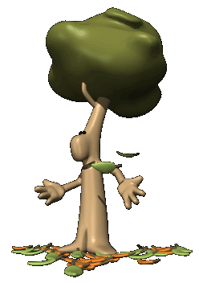

¿Porque Árboles? ◄ Volver ≡
Estas son 10 razones (de los muchos) de por qué los árboles ayudan al medio ambiente:
1. Los Árboles Producen Oxígeno.
2. Los Árboles Limpian El Suelo.
3. Los Árboles Controlan La Contaminación por Ruido.
4. Los Árboles Reducen El Escurrimiento de Aguas Pluviales.
5. Los Árboles Reduce Dióxido de Carbono.
6. Los Árboles Limpian El Aire.
7. Los Árboles Crea Sombras.
8. Los Árboles Actúan como Rompevientos.
9. Los Árboles Evitan la Erosión del Suelo.
10. Los Árboles Aumentan el Valor de la Tierra.
Si un árbol hace todas esas cosas, ahora imagina miles de árboles
plantados en todo el continente por nosotros, los Scouts, en el mismo
día. ¡Será una gran ayuda para nuestra comunidades, el medio ambiente y de los países!